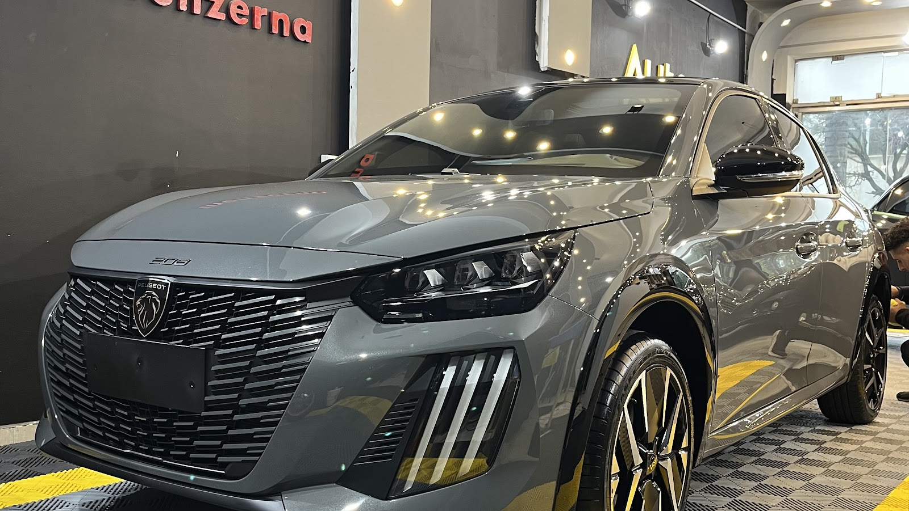
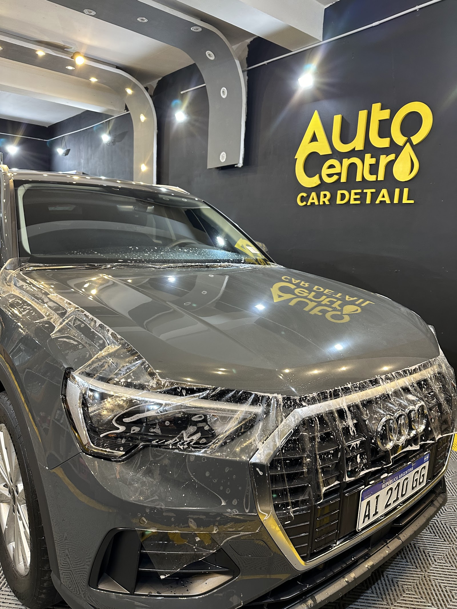
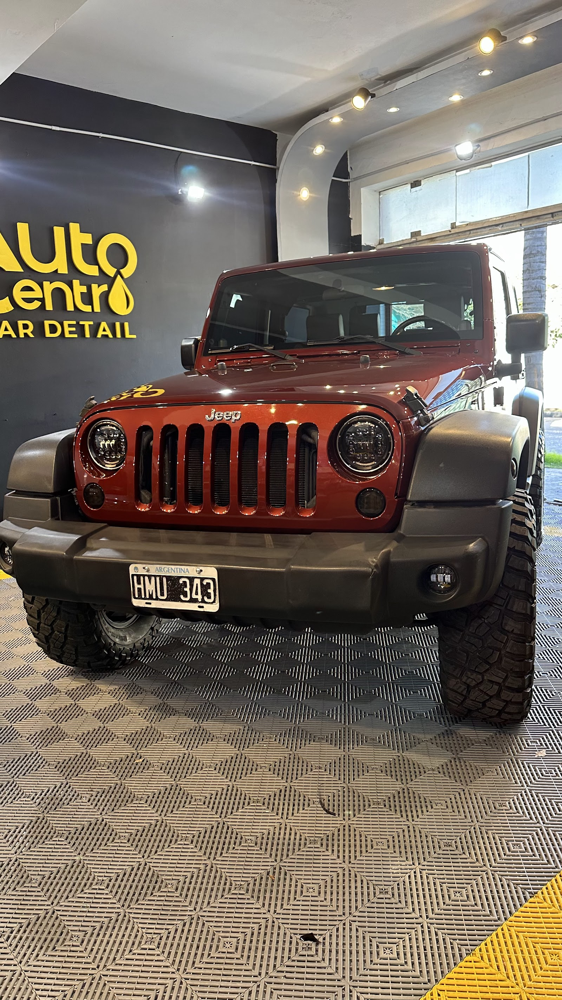

Bóveda de detailing nocturna
Cada detalle de tu auto, bajo la luz que no perdona
Auto Centro CarDetail atiende en Puvr Olimpia 1851, Córdoba Capital, con 5.0 sobre 5 en 92 reseñas y un box donde cada trabajo queda a la vista.

Servicios del box
Lo que se ve en el box
Interior, exterior y protección: cada servicio evidenciado por un trabajo real dentro del box. El punto de partida es mirar el estado del auto bajo luz fuerte, entender qué necesita y reservar un turno telefónico directo, sin formularios ni vueltas.
Detailing de habitáculo
Butacas, alfombras y plásticos, con foco en que el interior vuelva a sentirse cuidado antes de usarlo, venderlo o entregarlo.
Pulido y brillo
Terminación visible en las fotos del box, revisada bajo luces de trabajo que muestran marcas, reflejos y detalles de pintura.
Film de protección (PPF)
Instalación registrada en el Audi del box, pensada para cuidar pintura en zonas expuestas sin sumar promesas fuera de lo visible.
Listo para mostrar
Preparación para venta, entrega o próximo dueño, el caso que aparece en la reseña de Maria del Rosario Castro Tomassini.
Resultado real
Tres autos, tres resultados
Las fotos del propio box muestran el trabajo terminado con piso ajedrezado, luces de trabajo y logo dorado en la pared. El respaldo comercial no sale de un catálogo: sale del Peugeot, el Audi y el Jeep que aparecen dentro del local.


Clientes reales
Autos impecables, trato profesional
Las reseñas públicas son el respaldo principal de esta reputación. Hablan de autos impecables, atención profesional y resultados que sirven tanto para disfrutar el auto como para prepararlo antes de una entrega.
“Facu y Mauri dejaron mi auto impecable! Siempre atentos y profesionales.”
Maria del Rosario Castro Tomassini
“Excelente atención, muy bien el trabajo, muy conforme, gracias!!”
Victor Hugo Ponce
“Lleve 3 autos y quedaron espectaculares. Super recomendable.”
Francisco Achaval
Contacto directo
Llamá, escribí o pasá por el box
Teléfono, dirección y horario sin vueltas. Puvr Olimpia 1851, X5000 Córdoba, Argentina. Lunes a viernes de 9:00 a 18:30, sábados de 9:00 a 13:00. Domingo cerrado. Si querés llevarlo antes de venderlo, entregarlo o simplemente dejarlo mejor para usarlo, la coordinación empieza por llamada y sigue con el auto en el box.